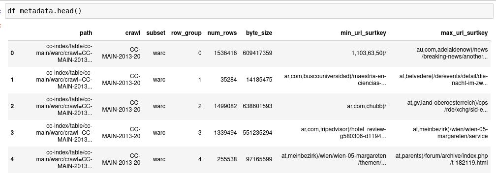
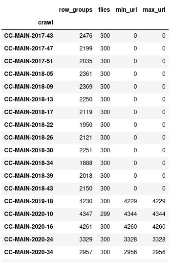

Read Common Crawl Parquet Metadata with Python
Common Crawl releases columnar indexes of their web crawls in the Apache Parquet file format. This can be efficiently queried in a distributed manner using Amazon Athena or Spark, and the Common Crawl team have released a number of examples. I wanted to see if I could use Python to directly read these Parquet files to find crawls of particular websites. The default way to do this is using their capture index, but this is often under high load so can fail and will reject too many simultaneous requests. If we can quickly find the data we need from these static Parquet files we could run queries processes in parallel.
The columnar indexes for Common Crawl are too large to quickly download. For example the 2022-05 crawl has a columnar index consisting of 300 parquet files with a total compressed size of 205 GB. Keep in mind this is just an index, it doesn’t contain any crawled web page data; the actual data is over 72TB spread across 72,000 files. It would take a lot of time to download all these files to look for crawls across a handful of domains, but it turns out we don’t need to. The Parquet files are approximately sorted by url_surtkey, which is a canonical form of URL with host name reversed. For example the url_surtkey for this page would be com,skeptric)/reading-parquet-metadata. By searching the Parquet files that contain the url_surtkey we are looking for we can just query one or two of the 300 files.
In this article we download the Parquet metadata for all 25,000 WARC indexes in under 7 minutes from Australia, using asyncio. A way to make it even faster would be to run it in an EC2 instance where the data is, us-east-1. We can then use it to query a single domain for a single crawl in about a minute. This is fairly slow but we could make many requests concurrently across crawls and domains. You can view the corresponding Jupyter notebook (or the raw ipynb).
Reading Metadata with PyArrow
PyArrow, part of the Apache Arrow project, provides great support for Parquet through the dataset interface. We can pass it the base path and it will discover all the partitions and Parquet files in seconds. Note that Common Crawl requires authentication for S3 access, so this requires having an AWS account setup and configured (see the boto3 documentation for how to do that).
import pyarrow.dataset as ds
cc_index_s3_path = 's3://commoncrawl/cc-index/table/cc-main/warc/'
cc_index = ds.dataset(cc_index_s3_path, format='parquet', partitioning='hive')The individual files can be accessed from the dataset using the get_fragments method, and we can pass a filter on the partition keys to efficiently only access certain files. Here we get the index to the WARC files for the 2022-05 crawl:
fragments = list(
cc_index.get_fragments(
filter=(ds.field('crawl') == 'CC-MAIN-2022-05') &
(ds.field('subset') == 'warc')))
len(fragments)
# 300PyArrow exposes methods for accessing metadata for these fragments (files), such as the number of rows and their sizes. Each fragment contains “row groups” which are a large block of records. In this case there are associated statistics stored in the row group metadata:
fragments[0].row_groups[0].statisticsWhich gives a long list of data starting with:
{'url_surtkey': {'min': 'com,wordpress,freefall852)/2016/03/29/billy-guy',
'max': 'com,worldpackers)/search/skill_hospitality_entertainment/type_hotel?location_categories[]=nature&location_types[]=hotel&min_meals_count[]=3&months[]=11&skills[]=music'},
'url': {'min': 'http://03.worldchefsbible.com/',
'max': 'https://zh.worldallianceofdramatherapy.com/he-mission'},
'url_host_name': {'min': '03.worldchefsbible.com',
'max': 'zr1.worldblast.com'},
'url_host_tld': {'min': 'com', 'max': 'com'},
'url_host_2nd_last_part': {'min': 'wordpress', 'max': 'worldpackers'},
'url_host_3rd_last_part': {'min': '03', 'max': 'zr1'},
'url_host_4th_last_part': {'min': 'bbbfoundation', 'max': 'www'},
'url_host_5th_last_part': {'min': 'http', 'max': 'toolbox'},
'url_host_registry_suffix': {'min': 'com', 'max': 'com'},
'url_host_registered_domain': {'min': 'wordpress.com',
'max': 'worldpackers.com'},
'url_host_private_suffix': {'min': 'com', 'max': 'com'},
'url_host_private_domain': {'min': 'wordpress.com',
'max': 'worldpackers.com'},
'url_host_name_reversed': {'min': 'com.wordpress.freefall852',
'max': 'com.worldpackers.www'},
'url_protocol': {'min': 'http', 'max': 'https'},
'url_port': {'min': 443, 'max': 2000},
...One thing to notice is the url_surtkey goes through a pretty narrow alphabetical range from com,wordpress through to com,worldpackers (as does url_host_private_domain but it’s not available for older crawls). If we wanted to find crawl data from a particular domain it’s easy to tell whether it’s from this domain. The fragments have a method to_row_groups which has a filter argument which can use these statistics to skip over blocks. Unfortunately it’s quite slow for Pyarrow to just read the Parquet metadata; from my laptop it can process about 2-3 files per second.
Using fastparquet
Fastparquet, part of the Dask Project, also provides a good interface for reading Parquet files. However it is quite slow; it takes 2.3 seconds to access a single file, which just reads the metadata.
from fastparquet import ParquetFile
import s3fs
fs = s3fs.S3FileSystem()
pf = ParquetFile(fn=fragments[0].path, fs=fs)All the file metadata is accessible for each of the columns through the fmd attribute.
pf.fmd.row_groups[0].columns[0].meta_data._asdict(){'type': 6,
'encodings': [0, 4],
'path_in_schema': ['url_surtkey'],
'codec': 2,
'num_values': 1730100,
'total_uncompressed_size': 117917394,
'total_compressed_size': 23113472,
'key_value_metadata': None,
'data_page_offset': 4,
'index_page_offset': None,
'dictionary_page_offset': None,
'statistics': {'max': None,
'min': None,
'null_count': 0,
'distinct_count': None,
'max_value': "b'com,worldpackers)/search/skill_hospitality_entertainment/type_hotel?location_categories[]=nature&location_types[]=hotel&min_meals_count[]=3&months[]=11&skills[]=music'",
'min_value': "b'com,wordpress,freefall852)/2016/03/29/billy-guy'"},
'encoding_stats': [{'page_type': 0, 'encoding': 0, 'count': 122}],
'bloom_filter_offset': None}Reading the data manually
To understand what’s happening here we can access the data manually. The Parquet file layout contains all the data, followed by the File Metadata, followed by a 32-bit integer describing the length of the metadata in bytes, and then the magic string “PAR1” to identify the file type.

To read the data first we need to find the length of the file so that we can find the end of it. We can access the HTTP REST endpoint for AWS S3 using boto3 to make a HEAD request to find the Content-Length without reading any data.
import boto3
s3 = boto3.client('s3')
file = fragments[0].path
bucket, key = file.split('/', 1)
metadata = s3.head_object(Bucket=bucket, Key=key)
content_length = int(metadata['ContentLength'])
f'{content_length / (1024**3):0.1f} GB'
# 1.3 GBWe then need to find the length of the file metadata by reading the last 8 bytes, using a HTTP Range Request.
end_byte = content_length
start_byte = end_byte - 8
response = s3.get_object(Bucket=bucket,
Key=key,
Range=f'bytes={start_byte}-{end_byte}')
end_content = response['Body'].read()
assert end_content[-4:] == b'PAR1'
file_meta_length = int.from_bytes(end_content[:4], byteorder='little')
f'{file_meta_length / 1024:0.1f} kb'
# 57.4 kbNow that we know how long the file metadata is we can work backwards to extract it.
end_byte = content_length - 8
start_byte = content_length - 8 - file_meta_length
response = s3.get_object(Bucket=bucket,
Key=key,
Range=f'bytes={start_byte}-{end_byte}')
file_meta_content = response['Body'].read()The metadata format is pretty complicated, so instead of parsing it we can use fastparquet to extract a representation using Apache Thrift.
from fastparquet.cencoding import from_buffer
fmd = from_buffer(file_meta_content, "FileMetaData")
type(fmd)
# fastparquet.cencoding.ThriftObjectThe attributes of this object correspond to the metadata, and can be accessed as directly with fastparquet. The whole process takes under a second per file; faster than both PyArrow and fastparquet, but still a little slow.
Concurrent request with asyncio
We want to read the metadata from many parquet files but we spend a lot of time waiting to get data from the server. This kind of I/O bound problem is perfect for asyncio. We could use aiobotocore to access S3 in an asynchronous context, but instead I decided to use the Common Crawl HTTP Interface. This is publicly accessible and does not require any authentication, but unfortunately the Parquet files can’t be automatically discovered over HTTP. We can convert our files discovered by Apache Arrow over S3 into HTTP frontend by replacing the Common Crawl bucket commoncrawl/ with the prefix https://data.commoncrawl.org/.
# Just get the warc files
warc_files = [f for f in cc_index.files if '/subset=warc/' in f]
# Convert from S3 bucket/key to data.commoncrawl.org/
http_files = ['https://data.commoncrawl.org/' +
x.split('/', 1)[1] for x in warc_files]I don’t understand asyncio in as much detail as I would like, so this code may not be quite right. I modified a stackoverflow answer on using aiohttp to download files to this usecase.
import asyncio
import aiohttp
async def _async_parquet_metadata_http(url, session):
"""Retrieve Parquet file metadata from url using session"""
async with session.head(url) as response:
await response.read()
output_headers = response.headers
content_length = int(output_headers['Content-Length'])
headers={"Range": f'bytes={content_length-8}-{content_length}'}
async with session.get(url=url, headers=headers) as response:
end_content = await response.read()
if end_content[-4:] != b'PAR1':
error = 'File at %s does not look like a Parquet file; magic %s'
raise ValueError(error % (path, end_content[-4:]))
file_meta_length = int.from_bytes(end_content[:4], byteorder='little')
start = content_length-8-file_meta_length
end = content_length-8
headers={"Range": f'bytes={start}-{end}'}
async with session.get(url, headers=headers) as response:
file_meta_content = await response.read()
return file_meta_content
async def fetch_parquet_metadata_http(urls):
"""Retrieve Parquet metadata for urls asyncronously, returning exceptions"""
async with aiohttp.ClientSession(raise_for_status=True) as session:
ret = await asyncio.gather(*[_async_parquet_metadata_http(url, session)
for url in urls],
return_exceptions=True)
return retTo scan all the indexed WARC crawls is over 25,000 files and the Parquet metadata alone is over 1 GB. When dealing with this many requests, 3 per file, at least one request is likely to fail. There are three kinds of failures I can think of:
- An intermittent issue causes an individual load to fail.
- There is an issue with an individual file and so loading will always fail.
- There is an environmental issue (server rejecting all requests, network down) and all requests fail.
Note about we passed return_exceptions=True in asyncio.gather which allows us to handle these errors. A simple approach is:
- Run a batch of N requests
- Capture any errors and put these jobs in a retry cue (to handle 1)
- Remove any jobs that have been retried too many times (to handle 2)
- Persist successful results so they can be reused
- If more than x% of the N requests fail abort the process (to handle 3).
Running in small batches also avoids the problem of running too many asynchronous tasks in parallel and locking the CPU. We can store our metadata in an sqlitedict and maintain a job queue and retry counts.
from collections import defaultdict
from sqlitedict import SqliteDict
metadata_store = SqliteDict('common_crawl_columnar_index_metadata.sqlite')
max_retries = 3
max_exceptions_per_batch = 5
batch_size = 1000
retries = defaultdict(int)
exceptions = defaultdict(list)
seen = set(metadata_store.keys())
jobs = [x for x in http_files if x not in seen]
len(jobs)
# 25193We can now run through all the jobs:
start_time = time.time()
while len(jobs) > 0:
batch = jobs[:batch_size]
batch_metadata = await(async_parquet_metadata_http(batch))
num_exceptions = 0
for job, metadata in zip(batch, batch_metadata):
if isinstance(metadata, Exception):
logging.warning(f'{job}: {type(Exception)}')
num_exceptions += 1
exceptions[job].append(metadata)
retries[job] += 1
if retries[job] >= max_retries:
jobs.remove(job)
else:
assert isinstance(metadata, bytes)
metadata_store[job] = metadata
jobs.remove(job)
metadata_store.commit()
if num_exceptions > max_exceptions_per_batch:
print('Too many exceptions %i' % num_exceptions)
break
print(f'Finished in {time.time() - start_time:0.0f}s')
# Finished in 408sThis is processing over 500 Parquet files per second, far better than our starting point of 2-3 Parquet files per second. We can then extract the relevant metadata into a Pandas Dataframe.
import pandas as pd
stats_columns = ['url_surtkey']
def extract_row_group_metadata(k, v):
fmd = from_buffer(v, "FileMetaData")
for idx, row_group in enumerate(fmd.row_groups):
result = {
'path': k[len('https://data.commoncrawl.org/'):],
'crawl': k.split('/')[-3].split('=')[-1],
'subset': k.split('/')[-2].split('=')[-1],
'row_group': idx,
'num_rows': row_group.num_rows,
'byte_size': row_group.total_byte_size,
}
for col in stats_columns:
minimum = get_column_metadata(col, row_group).statistics.min_value
maximum = get_column_metadata(col, row_group).statistics.max_value
# Convert byte strings into unicode
if isinstance(minimum, bytes):
minimum = minimum.decode('utf-8')
if isinstance(maximum, bytes):
maximum = maximum.decode('utf-8')
result[f'min_{col}'] = minimum
result[f'max_{col}'] = maximum
yield result
def extract_metadata(metadata_store):
for k, v in metadata_store.items():
for row in extract_row_group_metadata(k, v):
yield row
df_metadata = pd.DataFrame(extract_metadata(metadata_store))
df_metadata.head()
Using the metadata
Now that we have the metadata we can use it to look for crawls of commoncrawl.org in the 2020-24 crawl. First we query the metadata to find which files and row groups may contain this domain.
results = df_metadata.query('crawl == "CC-MAIN-2020-24" &\
min_url_surtkey <= "org,commoncrawl)/" <= max_url_surtkey')To iterate over these efficiently we can make a mapping from the paths to a list of row groups.
path_to_row_groups = (
results
.groupby('path')
.agg(row_groups = ('row_group', list))
['row_groups']
.to_dict()
)We can then use Pyarrow to read the required files and row groups:
from fsspec.implementations.http import HTTPFileSystem
http = HTTPFileSystem()
search_ds = ds.dataset('https://data.commoncrawl.org/' + path,
filesystem=http,
format='parquet',
partitioning='hive')
columns = ['url', 'url_host_name',
'warc_filename', 'warc_record_offset',
'warc_record_length']
for fragment in search_ds.get_fragments():
path = fragment.path[len(http_prefix):]
row_groups = fragment.split_by_row_group()
for row_group_idx in path_to_row_groups[path]:
row_group = row_groups[row_group_idx]
data = row_group.to_table(
columns=columns,
filter=ds.field('url_host_name') == 'commoncrawl.org')
if len(data) > 0:
all_groups.append(data)
results = pa.concat_tables(all_groups).to_pandas()This takes around 1 minute to scan through the 5 row groups; it could potentially be sped up using concurrent requests. We can then use this to download a single WARC files
import zlib
a = results.iloc[0]
url = 'https://data.commoncrawl.org/' + a.warc_filename
start = a.warc_record_offset
end = a.warc_record_offset + a.warc_record_length
header = {"Range": f'bytes={start}-{end}'}
r = requests.get(url, headers=header)
warc_data = r.content
data = zlib.decompress(warc_data, wbits = zlib.MAX_WBITS | 16)
print(data.decode('utf-8')[:2000])Missing Data
Looking through the crawl data between 2017-43 and 2018-43 there are not any statistics for url_surtkey:
(
df_metadata
.groupby('crawl')
.agg(row_groups = ('path', 'count'),
files = ('path', 'nunique'),
min_url = ('min_url_surtkey', 'count'),
max_url = ('max_url_surtkey', 'count'),
)
.query('min_url != row_groups')
.sort_index()
)
One way to construct this manually by reading through all the Parquet files and calculating the minimum and maximum url_surtkey by row group. If we’re happy to only filter at a file level we could also use AWS Athena to find them:
SELECT "$path" as path,
min(url_surtkey) AS min_url_surtkey,
max(url_surtkey) AS max_url_surtkey
FROM ccindex
WHERE crawl BETWEEN 'CC-MAIN-2017-43' AND 'CC-MAIN-2018-43'
AND subset = 'warc'